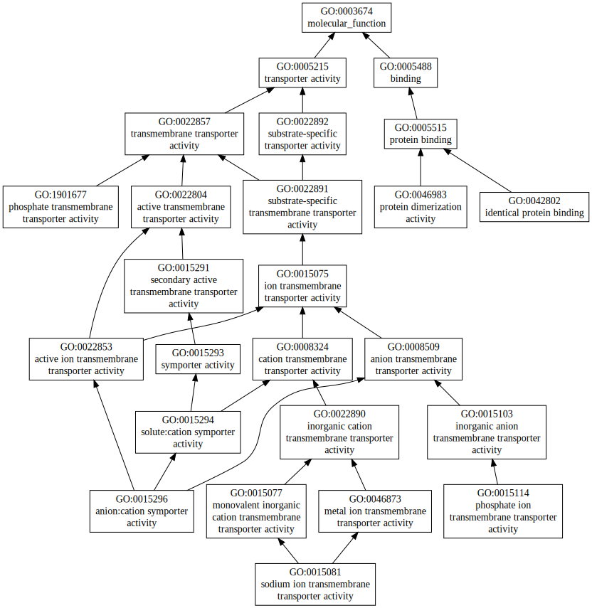
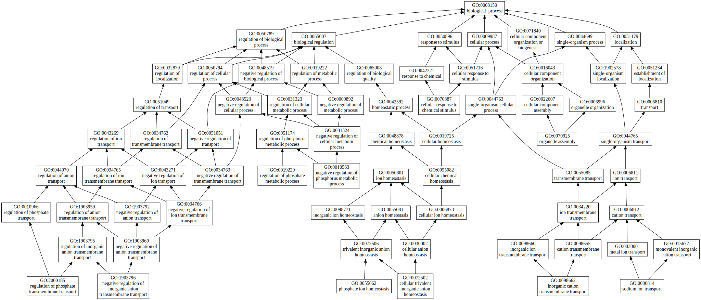
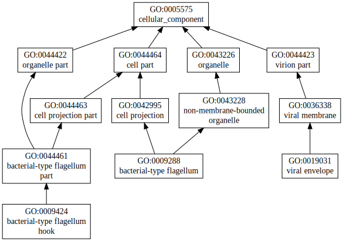

|

|
| GO term | CscoreGO | Name |
| GO:1901677 | 0.05 | phosphate transmembrane transporter activity |
| GO:0046983 | 0.05 | protein dimerization activity |
| GO:0042802 | 0.05 | identical protein binding |
| GO:0015296 | 0.05 | anion:cation symporter activity |
| GO:0015114 | 0.05 | phosphate ion transmembrane transporter activity |
| GO:0015081 | 0.05 | sodium ion transmembrane transporter activity |
| Download full result of the above consensus prediction. |
| Click the graph to show a high resolution version. |
| (a) | CscoreGO is the confidence score of predicted GO terms. CscoreGO values range in between [0-1]; where a higher value indicates a better confidence in predicting the function using the template. |
| (b) | The graph shows the predicted terms within the Gene Ontology hierachy for Molecular Function. Confidently predicted terms are color coded by CscoreGO: |
| | [0.13,0.5) | [0.5,0.6) | [0.6,0.7) | [0.7,0.8) | [0.8,0.9) | [0.9,1.0] |
|
|
|

|
| GO term | CscoreGO | Name |
| GO:2000185 | 0.04 | regulation of phosphate transmembrane transport |
| GO:1903796 | 0.04 | negative regulation of inorganic anion transmembrane transport |
| GO:0098662 | 0.04 | inorganic cation transmembrane transport |
| GO:0072502 | 0.04 | cellular trivalent inorganic anion homeostasis |
| GO:0055062 | 0.04 | phosphate ion homeostasis |
| GO:0019220 | 0.04 | regulation of phosphate metabolic process |
| GO:0010563 | 0.04 | negative regulation of phosphorus metabolic process |
| GO:0006814 | 0.04 | sodium ion transport |
| GO:0070925 | 0.02 | organelle assembly |
| GO:0070887 | 0.02 | cellular response to chemical stimulus |
| Download full result of the above consensus prediction. |
| Click the graph to show a high resolution version. |
| (a) | CscoreGO is the confidence score of predicted GO terms. CscoreGO values range in between [0-1]; where a higher value indicates a better confidence in predicting the function using the template. |
| (b) | The graph shows the predicted terms within the Gene Ontology hierachy for Biological Process. Confidently predicted terms are color coded by CscoreGO: |
| | [0.08,0.5) | [0.5,0.6) | [0.6,0.7) | [0.7,0.8) | [0.8,0.9) | [0.9,1.0] |
|
|
|

|
| Download full result of the above consensus prediction. |
| Click the graph to show a high resolution version. |
| (a) | CscoreGO is the confidence score of predicted GO terms. CscoreGO values range in between [0-1]; where a higher value indicates a better confidence in predicting the function using the template. |
| (b) | The graph shows the predicted terms within the Gene Ontology hierachy for Cellular Component. Confidently predicted terms are color coded by CscoreGO: |
| | [0.14,0.5) | [0.5,0.6) | [0.6,0.7) | [0.7,0.8) | [0.8,0.9) | [0.9,1.0] |
|
|
|